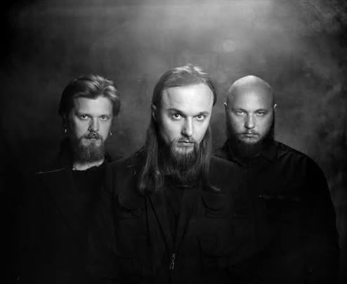
Молчат Дома
Пост-панк из Минска, который стал мировым звуком: «Судно» и Sacred Bones.
Музыканты, спортсмены, писатели, учёные и создатели — реальные люди с настоящими фотографиями и ссылками на источники. Нажмите на карточку, чтобы открыть портрет, факты и видео, если оно есть.
Листайте ленту ↓
Пост-панк из Минска, который стал мировым звуком: «Судно» и Sacred Bones.
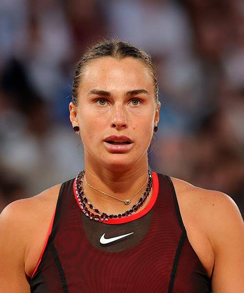
Первая ракетка мира: белорусская школа спорта, которая умеет превращать давление в игру.
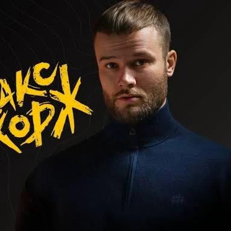
Стадионные гимны нового поколения: песня как общий опыт.
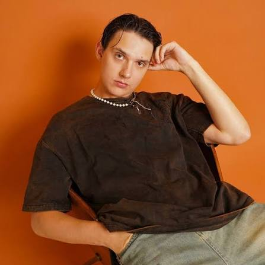
Городская романтика новой волны: жанр, в котором название страны стало брендом.
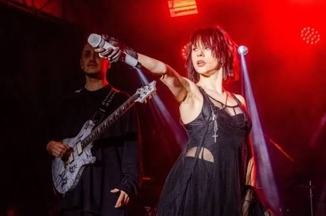
Могилёвский старт и большие сцены: голос, который узнают по первым строкам.
Ирония и рок: голос, который знают несколько поколений.
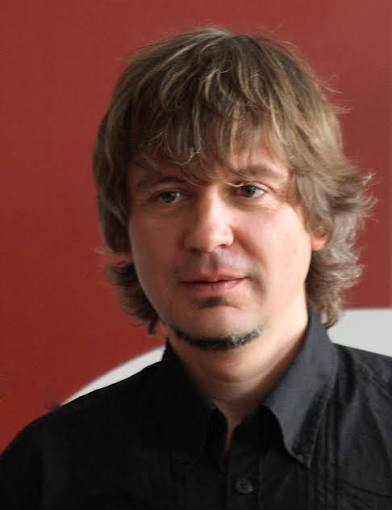
Голос N.R.M.: песни, которые стали общим языком нескольких поколений.
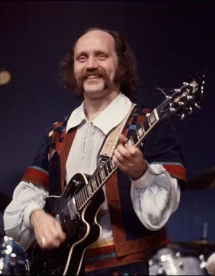
Народная песня на большой сцене: «Песняры» и их классика.
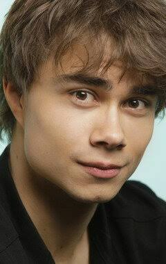
Минское детство и европейская сцена: Fairytale и скрипка.
Первая ракетка мира и олимпийское золото: спорт как часть культурного кода.
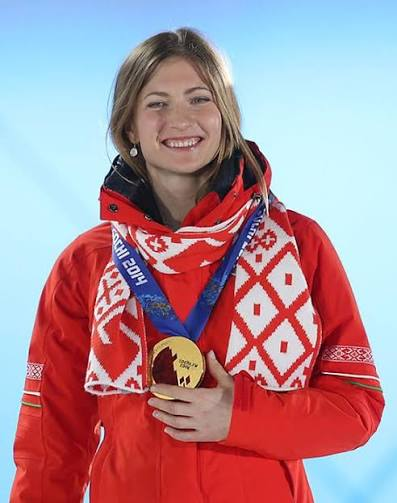
Четыре олимпийских золота: дисциплина как культурная ценность.
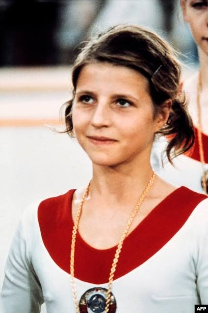
Гродно → мировая гимнастика: движение, которое знают по имени.
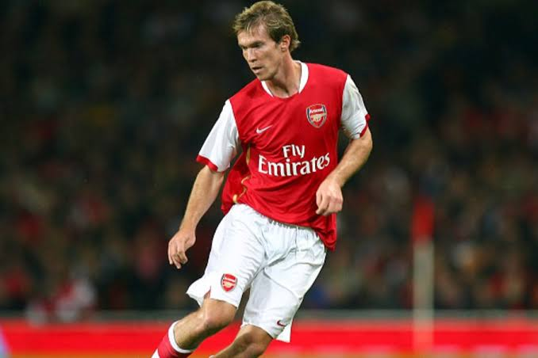
Борисов → «Арсенал» и «Барселона»: техника как язык.
Нобелевская премия 2015: книги, собранные из голосов людей.
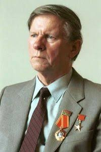
Война без пафоса: выбор человека как главная тема.
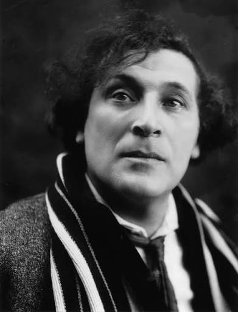
Летающие влюблённые и витебские крыши: образный язык века.
История как детектив: белорусская готика Короткевича.
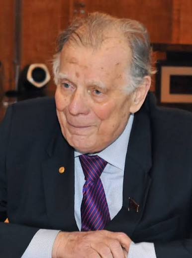
Витебск → Нобель: гетероструктуры в основе лазеров и светодиодов.
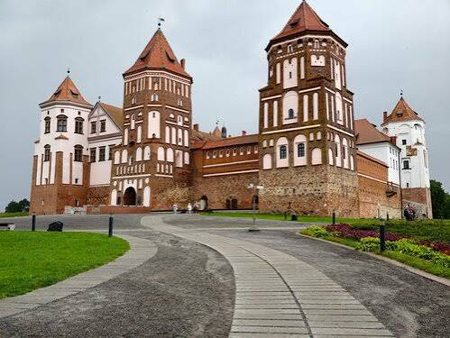
Готика и ренессанс: главный замок страны и объект ЮНЕСКО.
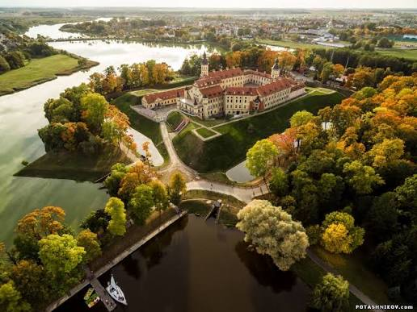
Резиденция Радзивиллов: дворцы, парки и история ВКЛ.
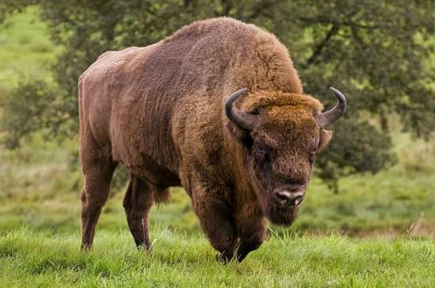
Древний лес Европы: зубры и чащи, которые помнят всё.
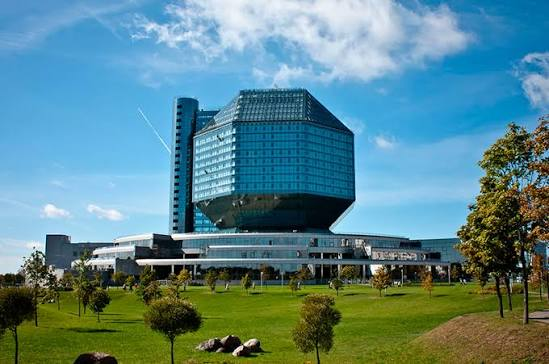
Здание-ромб: архитектура, которая цитирует орнамент.
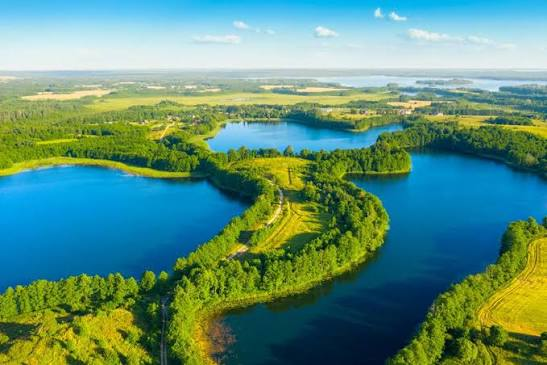
Самое большое озеро страны: тишина, сосны и вода.
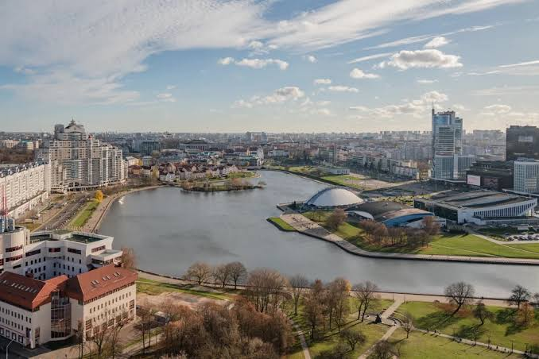
Город, где сходятся история, музыка и код.

Главный университет страны — и место, где сделан этот проект.
Минская студия, чья игра стала мировым хитом.
Особый режим и центр экосистемы, из которой выросли десятки команд.

От студийных драм до независимой документалистики.

Сцена, где слово и музыка встречаются со зрителем.

Стены и дворы как новая площадка культуры.
Вышивальщица повторяла ряд за рядом — блогер повторяет формат за форматом. Стадионный хор, семейный узор, строчка кода — всё это одна привычка: делать точно и делиться.
Вертикальное видео — это новый «узор в ряд»: маленький повторяемый мотив, в котором всё должно быть точно.
Стадионный хор — та же общинная культура, только вместо деревенской околицы — арена на десятки тысяч.
Дизайн и разработка — продолжение ремесленной точности: сделать аккуратно и так, чтобы держалось.